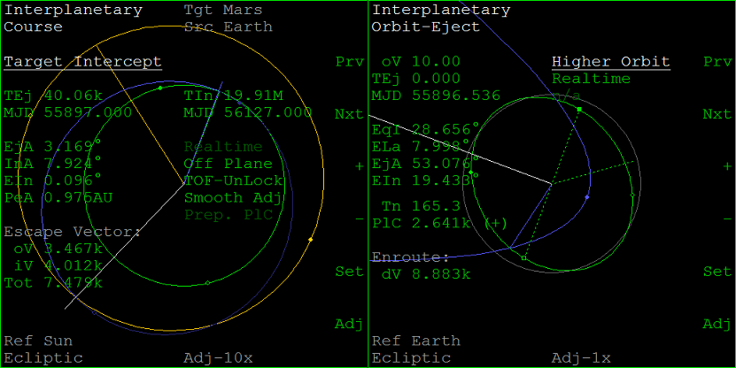
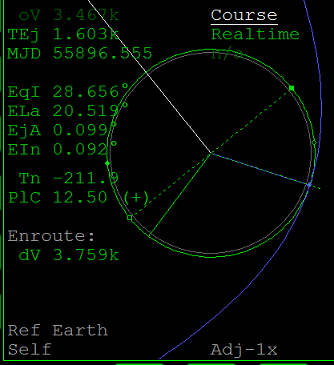
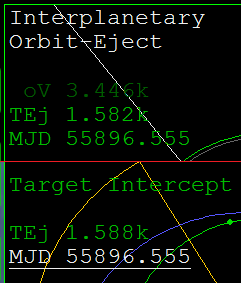
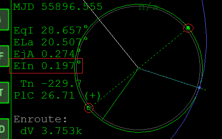
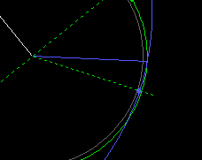
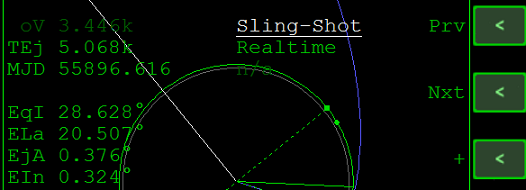
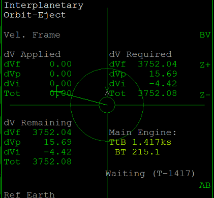

IMFD Part3 Orbit Ejectを使って地球を離れる
噴射前の準備
Orbit Ejectを開く
左のIMFDはTarget Interceptを開いたままにしておく。
右のIMFDでProgram MenuからOrbit Ejectを選択する。

Orbit Ejectで+をクリックして、Higher OrbitからCourseに切り替える。
PRJをクリックして、グラフの表示をSelfにする。

TEjを一致させる
Orbit Ejectに表示されているTEjの下のMJDを確認する。
Target InterceptのTEjの下のMJDを同じ数字にする。

軌道のずれを修正する
Orbit Ejectに戻る。
点線で結ばれた2つの四角はそれぞれAN or DNを指している。
この近くでNML+ or NML-を使ってエンジンを噴射すると、EInをゼロにすることができる。※

※IMFDは自動でEInを考慮して噴射してくれるので、あまり神経質にならなくてもよい
緑の円（現在の軌道）と青い曲線（予定される火星行き軌道）の交点でエンジンを噴射する。
噴射のタイミングを逃したとき
エンジンを噴射しないまま交点を通り過ぎてしまった場合は、+か-をクリック。

いったんCourse以外（Sling-Shotなど）を選択して、またCourseに戻す。

TEjが変更されるので、新しい値をTarget Interceptに入力する。
エンジンを噴射する
準備ができたら、Orbit EjectでPG（Page=ページ変更）をクリック。
BV(Burn Vector)をクリックしてから※、AB(Auto Burn)をクリック。

※BV画面を開かなくても噴射は可能
カウントダウンが開始されたら、タイムワープで放置する。
IMFDが自動でタイムワープを解除して噴射を実行するので、何もせず待つ。
噴射が終わったら、BVをクリックして元の画面に戻る。
タイムワープを使って、地球の重力圏を離れるのを待つ。
地球の重力圏を離れたら、Orbit EjectにHave a nice voyage!のメッセージが表示される。